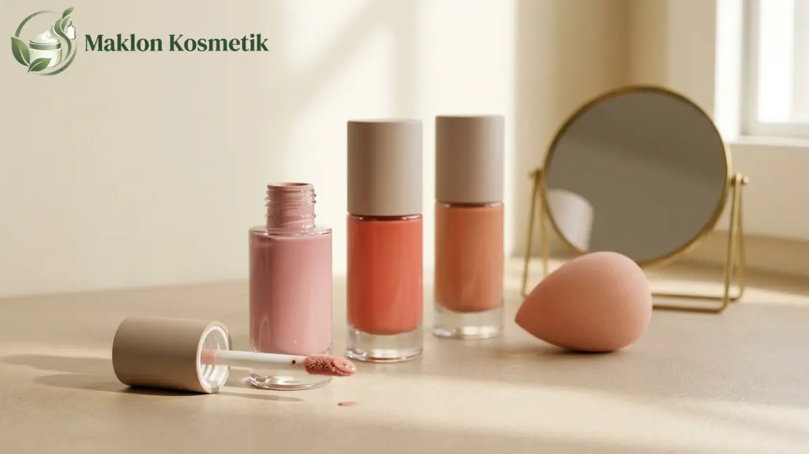
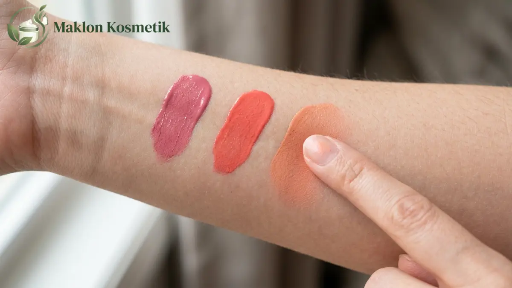

Fitur Keunggulan Maklon Liquid Blush On Pigmented dan Easy to Blend
Maklon liquid blush on pigmented easy to blend adalah produksi blush cair berpigmen tinggi dan mudah menyatu di kulit oleh pabrik kosmetik untuk brand pemesan.
- Liquid blush on pigmented berarti warna kuat dengan sedikit aplikasi, sedangkan easy to blend berarti mudah diratakan.
- Keunggulan utama meliputi pigmentasi kuat, tekstur mudah diratakan, hasil dapat ditumpuk, dan pilihan shade khusus.
- Kombinasi pigmented dan easy to blend menuntut keseimbangan dispersi pigmen, basis, dan kecepatan kering.
- Produk wajib memiliki notifikasi BPOM dan sertifikat halal, serta diproduksi pabrik bersertifikat CPKB.
- Pilih pabrik berdasarkan kemampuan color matching, kebijakan revisi sampel, dan uji stabilitas.

Daftar Isi
Apa Itu Liquid Blush On Pigmented dan Easy to Blend?
Liquid blush on adalah perona pipi cair; pigmented berarti warna kuat dengan sedikit aplikasi, sedangkan easy to blend berarti mudah diratakan tanpa meninggalkan batas warna.
Liquid blush on tersedia dalam bentuk cair, gel, atau krim ringan. Produk ini dipakai di pipi untuk memberi kesan segar dan merona alami sepanjang hari.
Pigmentasi adalah kekuatan warna yang tampak di kulit. Blendability adalah kemudahan produk diratakan sehingga transisi warna terlihat halus menyatu dengan kulit dasar.
Kombinasi keduanya menarik bagi pengguna yang ingin hasil natural dengan sedikit produk. Liquid blush on cocok untuk pemakaian harian, makeup minimalis, dan pengguna yang menyukai hasil dewy atau satin. Batasannya, hasil sangat bergantung pada teknik aplikasi dan kestabilan formula.
Data Penting: Seberapa Besar Ketergantungan Bahan Baku Kosmetik pada Impor?
Kemenperin pada Mei 2026 menyebut bahan baku kosmetik Indonesia masih sekitar 80 persen impor, sehingga ketersediaan pigmen perlu dicek sejak awal maklon.
Dalam keterangan yang sama, Direktur Jenderal IKMA Kemenperin menyampaikan nilai pasar kosmetik Indonesia diproyeksikan lebih dari 10 miliar dolar AS pada 2026 berdasarkan data Statista.
Data BPOM yang dikutip Kemenperin juga mencatat 1.684 industri kosmetik di Indonesia. Bagi brand liquid blush on, data ini punya dua makna strategis. Pertama, pasar yang besar berarti persaingan produk blush on juga sangat dinamis dan ketat.
Kedua, pigmen dan bahan khusus yang sering dipakai pada kosmetik dekoratif dapat berasal dari impor, sehingga waktu pengadaan memengaruhi jadwal sampel dan produksi massal. Tanyakan kepada pabrik bahan mana yang tersedia lokal dan mana yang perlu diimpor sejak awal.
Apa Saja Fitur Keunggulan Liquid Blush On dari Maklon?
Fitur keunggulan liquid blush on maklon meliputi pigmentasi kuat, tekstur mudah diratakan, hasil dapat ditumpuk, finish natural, pilihan shade khusus, dan kemasan aplikator praktis.
- Pigmentasi kuat: Sedikit produk sudah memberi warna nyata, sehingga satu botol kemasan dapat terasa awet digunakan berbulan-bulan.
- Mudah diratakan (easy to blend): Tekstur yang menyatu mulus dengan kulit mengurangi risiko warna menggumpal (patchy) atau meninggalkan garis tegas.
- Dapat ditumpuk (buildable): Pengguna dapat dengan leluasa mengatur intensitas rona, mulai dari sapuan tipis sehari-hari hingga rona tegas untuk acara formal.
- Pilihan finish beragam: Pabrik umumnya dapat memformulasikan hasil akhir sesuai tren, seperti rona glowing dewy, satin alami, maupun soft velvet.
- Shade khusus brand: Maklon memungkinkan pencocokan warna (color matching) yang disesuaikan dengan undertone kulit wanita Indonesia.
- Kemasan aplikator praktis: Berbagai pilihan wadah seperti aplikator doe foot besar, botol pompa vakum, atau dropper memudahkan pengaplikasian.
Setiap fitur perlu dibuktikan lewat pengujian sampel nyata, bukan hanya sekadar dijanjikan di atas proposal. Hindari klaim mutlak berlebihan seperti "paling pigmented di dunia" tanpa data riset pendukung yang memadai.
Bagaimana Formula Bisa Pigmented Sekaligus Easy to Blend?
Liquid blush on pigmented dan easy to blend dicapai lewat dispersi pigmen halus, basis dan emolien yang tepat, serta pengaturan kekentalan dan kecepatan kering.
Pigmentasi dan blendability sering kali saling bertolak belakang. Menambah pigmen terlalu padat bisa membuat tekstur mengental dan cepat menggumpal di atas pori-pori kulit.
Dispersi Pigmen & Emolien
Partikel pewarna digiling mikro agar terdispersi merata tanpa endapan. Basis silikon ringan atau minyak ester membantu pigmen meluncur mulus saat dioleskan.
Kekentalan & Drying Time
Formula dirancang tidak terlalu encer agar tidak meleber, namun memberi jeda waktu 45-60 detik bagi pengguna untuk meratakan rona sebelum mengunci sempurna di kulit.
Karena itu, kebutuhan pigmented dan easy to blend sebaiknya dijelaskan lewat acuan produk pembanding dan swatch fisik pada kulit, bukan hanya memakai kata sifat abstrak. Proses revisi sampel biasanya diperlukan untuk menemukan titik keseimbangan yang paling disukai pasar.

Apa Syarat BPOM dan Halal untuk Maklon Liquid Blush On?
Maklon liquid blush on memerlukan pabrik bersertifikat CPKB, notifikasi BPOM, dan sertifikat halal, karena kosmetik wajib bersertifikat halal mulai 17 Oktober 2026.
- CPKB sesuai sediaan: Pastikan sertifikat CPKB pabrik mencakup bentuk sediaan cairan atau emulsi semi padat yang sesuai dengan jenis formulasi blush on Anda.
- Notifikasi BPOM: Brand mengajukan sebagai pemohon notifikasi dengan melampirkan kontrak produksi resmi. Peraturan BPOM 21 Tahun 2022 mensyaratkan sisa masa berlaku sertifikat CPKB pabrik minimal 6 bulan.
- Pewarna yang diizinkan: Pigmen kosmetik dekoratif untuk pipi harus mematuhi daftar positif bahan pewarna BPOM dan lolos uji batas aman logam berat (timbal, merkuri, arsen).
- Sertifikat halal: Kewajiban halal kosmetik berlaku berdasarkan PP 42 Tahun 2024. Titik kritis pada perona pipi umumnya mencakup pigmen hewani seperti karmin (Carmine Cl 75470), bahan turunan hewani, dan asam lemak pelarut.
Finalisasi formula sebelum perizinan sangat penting, karena pejabat BPJPH menegaskan bahwa sertifikat halal berlaku selama tidak ada modifikasi bahan atau alur proses formulasi di kemudian hari.
Bagaimana Memilih Pabrik Maklon Liquid Blush On?
Pilih pabrik maklon liquid blush on berdasarkan sertifikat CPKB untuk sediaan cair, kemampuan mencocokkan warna, kebijakan revisi sampel, MOQ, dan transparansi uji stabilitas.
- Periksa sertifikat CPKB: Pastikan cakupan operasional pabrik memayungi sediaan cairan dekoratif dan masa berlakunya masih panjang.
- Kemampuan color matching: Minta sampel pencocokan warna dari lab mereka dan tanyakan tingkat toleransi variasi warna antarbatch produksi.
- Kebijakan revisi sampel: Ketahui berapa putaran revisi yang termasuk dalam paket, biaya sampel tambahan, dan durasi pengerjaan.
- MOQ dan arus kas: Sesuaikan jumlah minimum order pabrik dengan kapasitas anggaran pemasaran awal brand Anda.
- Uji stabilitas suspensi: Pigmen cair rentan mengalami pemisahan fase minyak atau mengendap di dasar wadah setelah disimpan berbulan-bulan.
- Kesiapan halal: Pastikan pabrik memiliki penyelia halal dan pasokan pigmen yang sudah bersertifikat halal resmi.
- Kecocokan kemasan: Uji botol dan aplikator doe foot pilihan untuk memastikan cairan tidak bocor, merembes, atau meleber saat ditutup.
Apa Kelebihan dan Batasan Liquid Blush On Dibanding Powder Blush?
Liquid blush on unggul dalam hasil natural dan menyatu di kulit, tetapi lebih sensitif terhadap teknik aplikasi, kestabilan formula, dan kebocoran kemasan dibanding powder blush.
| Aspek Produk | Liquid Blush On | Powder Blush |
|---|---|---|
| Hasil di kulit | Natural, menyatu, cenderung dewy atau satin | Lebih matte atau berbedak (powdery) |
| Kemudahan blending | Perlu cepat diratakan sebelum mengering | Lebih santai dan mudah diatur ulang |
| Pigmentasi | Kuat hanya dengan sedikit titik produk | Bergantung kepadatan kuas dan pulasan |
| Risiko kemasan | Bocor atau merembes jika tutup kurang rapat | Pecah atau retak bila terjatuh keras |
| Sensitivitas formula | Rentan pengendapan pigmen & pemisahan emulsi | Kestabilan fisik cenderung lebih tinggi |
| Kecocokan jenis kulit | Sangat baik untuk kulit normal sampai kering | Populer untuk kulit berminyak / kombinasi |
Pemilihan bentuk produk sangat bergantung pada target audiens brand Anda. Brand yang mengincar tren clean girl makeup dan tampilan kulit sehat glowing akan sangat diuntungkan dengan menghadirkan lini liquid blush on.
Apa Kesalahan Umum Brand dalam Maklon Liquid Blush On?
Kesalahan umum maklon liquid blush on adalah mengejar pigmentasi tinggi tanpa menguji blendability, mengabaikan kecocokan kemasan, menunda halal, dan menyetujui shade hanya dari layar.
- Mengejar pigmentasi saja: Warna yang kelewat pekat sering kali membuat produk sangat sulit diratakan dan meninggalkan bercak tajam yang tidak estetis.
- Mengabaikan kompatibilitas aplikator: Formula cair harus diuji seksama bersama jenis wiper dan aplikator agar tidak mengambil produk terlalu banyak.
- Menunda sertifikasi halal: Menunggu hingga formula jadi baru mengecek status halal pigmen berisiko membongkar kembali seluruh racikan.
- Menyetujui shade dari foto digital: Warna pada layar gawai memiliki saturasi berbeda dengan pigmen asli di kulit; selalu lakukan uji swatch fisik.
- Tidak menguji variasi undertone: Satu shade blush on bisa terlihat segar di kulit cool undertone namun terlihat kusam di warm undertone.
- Melewatkan uji kestabilan emulsi: Pengendapan warna baru terlihat setelah produk disimpan beberapa minggu pada suhu ruang dan ruang uji panas.
Dengan memilih formula matang dan pabrik maklon yang berpengalaman dalam kosmetik dekoratif cair, brand kecantikan Anda siap meluncurkan liquid blush on favorit konsumen yang viral dan berizin resmi.
Tanya Jawab Seputar Maklon Liquid Blush On (FAQ)

Tentang Penulis: Meilita
Product Development & Formulation Consultant di Maklon Kosmetik ID. Berpengalaman mendalam dalam pengembangan tekstur kosmetik dekoratif, color matching pigmen, uji stabilitas formula emulsi, dan kepatuhan perizinan BPOM serta Halal.